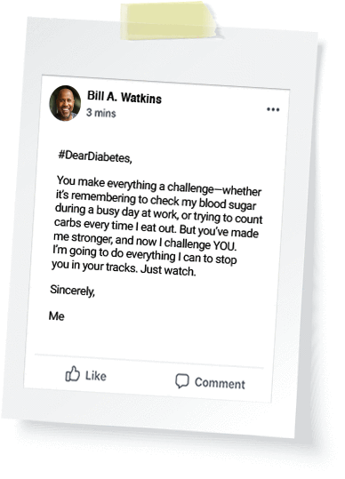

- Are You at Risk? Home
- Prevention
- Diagnosing Diabetes and Learning About Prediabetes
- Type 2 Diabetes Risk Test
- Lower Your Risk
- My Health Advisor
- Tools To Know Your Risk
- Alert Day
- Diabetes Basics Home
- Symptoms
- Diagnosis
- America's Diabetes Challenge
- Type 1
- Type 2
- Gestational
- Genetics of Diabetes
- Diabetes Myths
- A Day in the Life of Diabetes
- Famous People Working to Stop Diabetes
- Common Terms
- Diabetes Statistics
- Living with Diabetes Home
- Recently Diagnosed
- We Can Help
- Drive to Stop Diabetes
- Complications
- Step On Up
- Treatment & Care
- Health Insurance
- For Parents & Kids
- Know Your Rights
- Food & Fitness Home
- Food
- MyFoodAdvisor
- Recipes
- Association Cookbook Recipes
- Planning Meals
- What Can I Eat?
- Food Tips
- Understanding Carbohydrates
- Fitness
- Weight Loss
- In My Community Home
- Find Your Local Office
- Calendar of Events
- Wellness Lives Here
- Drive to Stop Diabetes
- Awareness Programs
- Diabetes EXPO
- Camp
- Fundraising Events
- Become a Volunteer
- American Diabetes Month®
- American Diabetes Association Alert Day®
- Become a Member
- Research & Practice Home
- We Are Research Leaders
- Diabetes Pro:
Professional Resources Online - We Support Your Doctor
- Patient Access to Research
- Student Resources
- Research Resources
- Practice Resources
Please Join Us in the Fight for a Cure
Why Give?
Nearly 30 million battle diabetes and every 23 seconds someone new is diagnosed. Diabetes causes more deaths a year than breast cancer and AIDS combined. Your gift today will help us get closer to curing diabetes and better treatments for those living with diabetes.
Other Ways to Give
- Give by Phone
1-800-DIABETES
(800-342-2383) - Give by Mail
November is American Diabetes Month®
Whether you’re living with diabetes, caring for someone who is, or you’re fighting to stop it, there's a hero in you. One in 11 Americans has diabetes. So put on your cape and take a stand.
How to write a letter to Diabetes
Consider what you would say to Diabetes.
How does it make you feel?
Write a letter to Diabetes expressing your feelings.
Not a writer? Record a video or audio message.
Share your letter to Diabetes on
social media using #DearDiabetes.
Hear letters to Diabetes from our heroes
Video Title 1 Here
A Short Description Here
Video Title 2 Here
A Short Description Here
Video Title 3 Here
A Short Description Here
American Diabetes Month 2017 is sponsored by